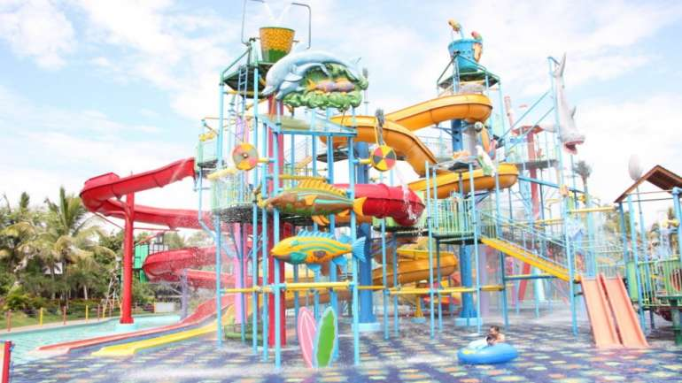

Ini Dia 5 Waterpark Seru di Malang untuk Liburan Keluarga
By : Admin
Tanggal : 21-September-2018
Kota Malang yang indah punya banyak tempat wisata yang sayang banget untuk dilewati. Mulai dari wisata taman kota,
pantai, sampai dengan waterpark seru atau wisata air yang bisa bunda kunjungi bareng keluarga di akhir pekan.
Kira-kira bunda dan keluarga udah punya rencana berlibur kemana nih akhir pekan ini? Berikut Lapis Malang punya 5
rekomendasi waterpark di Malang yang bisa bunda kunjungi bareng keluarga.
Hawai Waterpark
Waterpark yang satu ini termasuk waterpark di Malang yang sedang naik daun. Gimana tidak Hawai Waterpark merupakan
waterpark terbesar di Malang. Hawai waterpak menawarkan berbagai macam permainan seru yang sangat diminati pengunjung.
Hanya dengan membayar Rp 75 ribu saat weekdays dan Rp 100 ribu saat weekend, Bunda sudah bisa mengajak buah hati tercinta
mencoba aneka wahananya mulai dari Hawai Water House, Ekolu Slide, Water Plaza, dan lainnya. Di sini juga ada penyewaan
peralatan untuk berenang seperti ban, baju renang, handuk, dan masih banyak lagi. Dan oh ya, waterpark ini bisa Bunda temukan
di Jalan Graya Kencana Raya, Singosari Malang
Taman Rekreasi Sengkaling UMM
Objek wisata ini berlokasi di di Jalan Raya Mulyoagung, Kecamatan Dau, Kabupaten Malang, dan dekat dengan Universitas
Muhammadiyah Malang. Banyak sekali aneka macam wahana seru yang bisa bunda coba bersama keluarga di Taman Rekreasi UMM,
misalnya 5 kolam renang air panas dan dingin sepeda air, 13 macam permainan anak, taman satwa, dan lain-lain. Selain itu
di objek wisata ini juga terdapat flying fox, go kart, dan perahu motor loh. Wah semakin seru kan bun? Jadi bunda gak perlu
khawatir si kecil bakal bosan jika berkunjung ke wisata air ini.
Brawijaya Edu Park
Taman rekreasi ini dulunya bernama Senaputra dan terkenal di era 90an loh bunda, dan berlokasi di Jl. Kahuripan Kota Malang.
Selain kolam renang, di taman wisata keluarga ini juga terdapat banyak permainan, seperti boom-boom car, trick art gallery,
mini scooter, bianglala untuk anak, sepeda udara, dan masih banyak lagi. Selain itu di Brawijaya Edu Park juga terdapat food court
yang menjual berbagai makanan, jadi bunda tidak perlu khawatir jika bunda tidak membawa bekal cukup saat berkunjung kesana.
Taman Wisata Tlogomas
Taman wisata air yang berlokasi di Jalan Baiduri Pandan 17 Tlogomas ini termasuk yang tertua di Kota Malang dengan fasilitas cukup menarik loh bunda.
Bunda dan si kecil bisa melihat miniatur tujuh keajaiban dunia serta patung karakter dongeng, dan candi saat masuk ke lokasi.
Juga ada miniatur air terjun yang mana sumbernya berasal dari sungai. Tak hanya itu, pada bagian tepi miniatur, jalur pejalan
kakinya sengaja dibangun dengan kontur naik turun serta dibuat serupa dengan gua. Jadi kebayangkan Bunda, betapa senangnya sang buah
hati saat diajak kemari.
Borderland
Taman rekreasi ini terletak di Dusun Bunder, Desa Genengan, Kecamatan Pakisaji, Kabupaten Malang dan hanya berjarak sekitar
8 km dari pusat Kota Malang.Walaupun lokasinya di kabupaten Malang, Bonderland memiliki fasilitas permainan yang seru loh bun,
seperti ayunan, motor mini, taman satwa, mini kolam air panas (jacuzzi), panggung hiburan, hall, wahana funfair, mandi bola,
dan beragam permainan anak lainnya. Oh ya, untuk tiket masuknya yaitu Rp 10.000 untuk hari Senin-Jumat dan Rp 12.000 untuk
hari Sabtu-Minggu.
Nah, itu tadi bun rekomendasi waterpark seru di Malang. Tentu Bunda tak hanya bisa mengajak anak bermain air di sana,
tetapi juga bisa mengajarinya berenang. Dan jangan lupa bawa serta jajanan manis Lapis Malang sebagai pengganjal perut
di kala lapar ya Bunda.